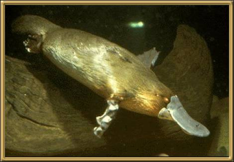

Perhaps one of the quirkiest anomalies ever. It has a duck's bill, webbed feet, a furry body, lays eggs, and yet is a mammal! The female Platypus usually lays two eggs and suckles its young. A male platypus is approximately 50 cm (20 inches) long and weighs 2kg (4 lbs). A female Platypus is approximately 42cm (16.5 inches) long. The male platypus has a poisonous spur on it's hind leg which contains a highly toxic poison. They swim with their eyes closed relying on other senses, and using their bills to stir up the bottom of the river.
Photographer: Unknown